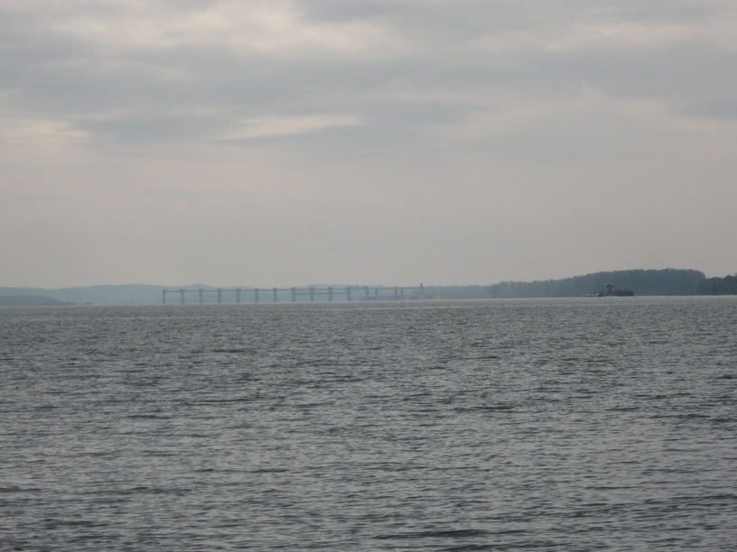
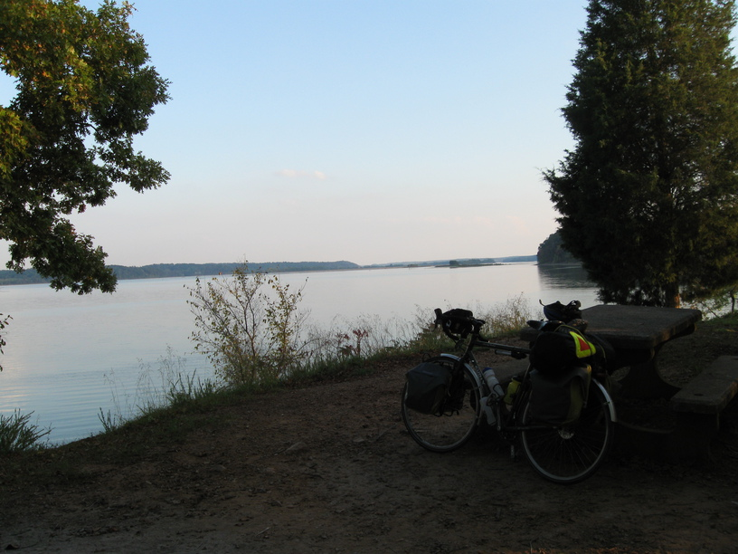
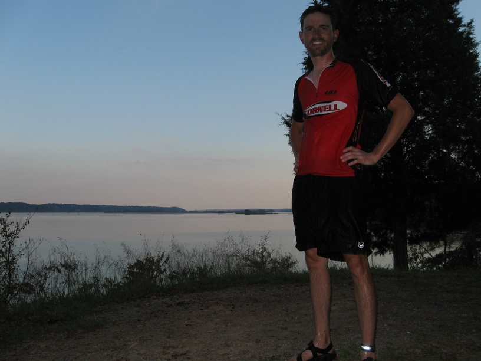
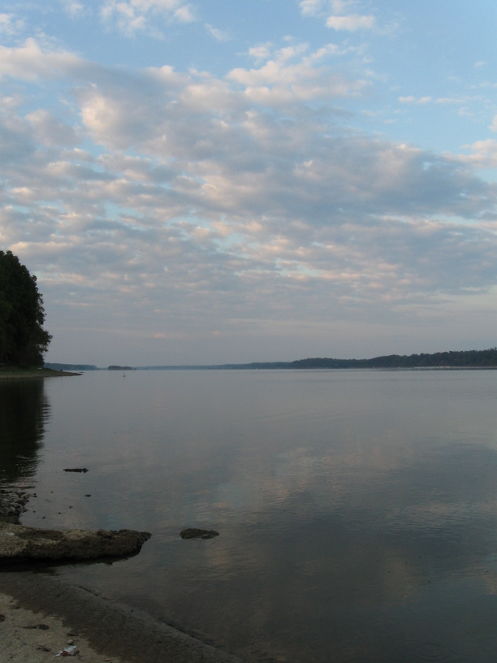
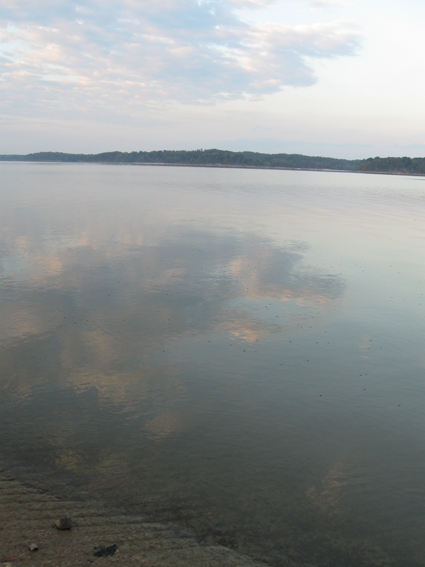
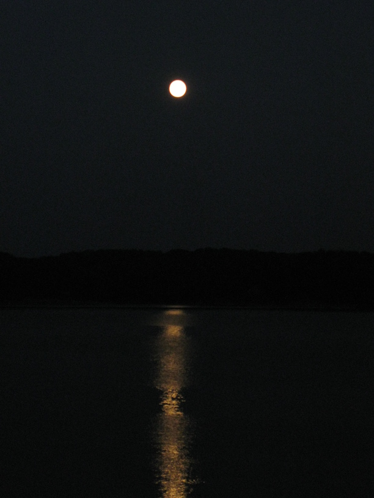
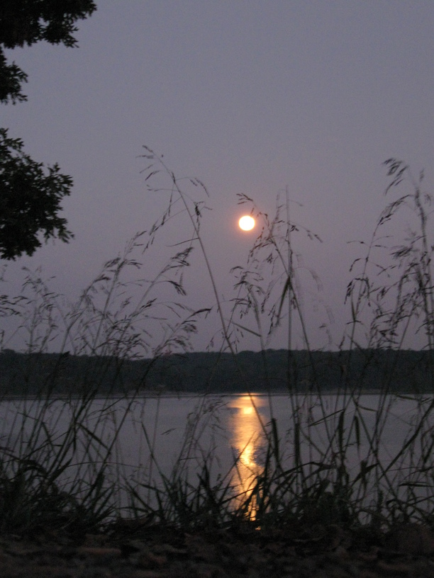

14 Oct 2008, Land Between the Lakes, KY
New journal!*
Another successful day. I rode ~70 miles after getting an early start out of Carrsville (8 am).
I rode into Smithland, KY around 11am, and my route turned left, but a sign pointing to the right said, "Scenic Overlook" so I took a detour towards the river. The overlook was, in fact, scenic, and I now realize that it was the last I'll see the Ohio River on this trip. There was a sort-of-gazebo structure on the overlook, and it was populated with some older gentlemen. They called their spot the "Buzzards' Roost" and were excited for me to try their city's water (there was a drinking fountain right there). The water was good, and I topped off my water bottles & took some pictures before getting back on the bike.
From Smithland I rode to Grand Rivers, a small town perched between the two dams which create Lake Barkley and Kentucky Lake. I stopped in the bike shop there (which someone had mentioned to me at spoon point recently in this trip—I don't remember who or when). I asked about the squealing from my front brakes, and the mechanic (and manager/owner?) gave me some sandpaper & instructions to sand down the brake pads a bit, and to wipe the rims as well. I was going to buy some Clif Bars while I was there, but instead I walked out with a free box of PowerBars, some energy gels, and some sort of anti-soreness supplement. These were all promotional products & samples that the store had received & couldn't sell. To top it off, I was also able to fill my water bag from their filtered faucet. Very nice people!
Lunch was next door at Mr. BBQ. Good Southern pulled pork sandwich. People got to asking me about my ride, maps, etc. Sometimes I don't want to go through the whole spiel, but I do anyway, both out of courtesy & out of bike advocacy.
The Land Between the Lakes is very beautiful. It's a lot like Smith Mountain Lake. A motorcyclists named Shane stopped & talked with me about the trip. He seemed kind of awestruck. I left him my card & told him to email if he had more questions.
My campsite tonight is probably the most beautiful & the hardest to get to so far. I pushed my bike up two hills to get here, but I have a little point out into the lake with a beautiful view to the east, where I saw the full moon soon after it rose over the lake. I took a quick swim when I got here—in my cycling clothes of course. It was a bit of a struggle to set up my tent where I wanted it—I had to climb some trees—but it's worth it. Have to get a picture of it all in the AM.
* This is the first entry in a new notebook, as I'd filled my first.






